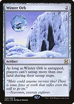

Expand all Collapse all Yuna-Combo is the Bracket 4 upgrade of Yuna-Enchantments, led by Yuna, Hope of Spira, not Grand Summoner. Both existing Bracket 3 Yuna lists remain unchanged. Do not wait to resolve a five-mana commander before assembling a win: the creature and enchantment tutors can finish independently, while Yuna supplies recovery after interaction. The short routes to lethal +Devoted Druid + Vizier of RemediesOnce Druid can tap, make green mana and use its untap ability. Vizier reduces the one -1/-1 counter to zero; paying that modified cost is legal. Repeat for arbitrary green mana. A fresh Druid still has summoning sickness. +Devoted Druid + Swift ReconfigurationEnchant Druid so it becomes a noncreature Vehicle and keeps its activated abilities. It can tap for green even if it just entered because it is no longer a creature. Put a -1/-1 counter on it to untap, then repeat; without creature toughness those counters do not kill it. Do NOT crew it or otherwise make it a creature while it has lethal counters. Cast Ballista from hand for the actual kill. Walking BallistaCast with an arbitrarily large X after the Druid or Weaver loop, then remove counters to deal lethal damage across the table. Casting costs twice X. A creature tutor putting a zero-counter Ballista straight into play normally loses it before you can activate it. +Heliod, Sun-Crowned + Walking BallistaGive a Ballista with at least TWO counters lifelink for one-white-plus-one. Shoot for one, gain one life, and put the counter back with Heliod. Repeat. Do not start with just one counter and assume it survives at zero. +Sanctum Weaver + Gauntlets of LightA ready Weaver with at least four enchantments, including Weaver and Gauntlets, taps for at least four white. Pay three, including one white, to untap it and net at least one mana. Build a white bank, then use some taps for green to fund tutors and Finale. +Sanctum Weaver + Staff of DominationAt least FIVE enchantments make this positive: tap Weaver for five, pay three and tap Staff to untap Weaver, then pay one to untap Staff. Net one and repeat. Exactly four only breaks even on mana; summoning sickness still matters. Staff of DominationOnce a loop makes arbitrary mana, its five-mana draw plus one-mana self-untap finds the outlet without relying on a combat step. Stop before drawing from an empty library. Finale of DevastationLarge X finds a creature and gives the team +X/+X and haste when X is at least ten. With enough attackers it is another mana-loop finish; one giant attacker does not kill three opponents by itself. +Earthcraft + Squirrel NestPut Nest on a BASIC land. Tap it for a Squirrel, then tap the new Squirrel to Earthcraft to untap that land. Repeat for arbitrary tapped Squirrels. Earthcraft is the enchantment's ability, so the new tokens can pay its tap cost despite summoning sickness. ++Earthcraft + Squirrel Nest + Blasting StationOn each entry, untap Station. Tap the new Squirrel to Earthcraft to untap the Nest land, then tap Station and sacrifice that Squirrel for damage. Repeat for lethal now. Without Station or another immediate outlet, the plain token loop waits to untap and can be swept. Find the missing piece, not another expensive threat →Worldly Tutor → Devoted DruidTop-deck access to Druid, Vizier, Weaver, Heliod, Ballista or a protective creature. It needs a draw and should follow fetches and other searches. →Eladamri's Call → Vizier of RemediesPuts the missing creature in hand at instant speed. Prefer a completed, protected line over adding another draw creature to an already productive board. →Chord of Calling → Devoted DruidFinds a creature directly onto the battlefield. Convoke can use fresh creatures, but a Druid found this way still waits to use its own tap ability. Chord cannot give Ballista X counters. →Eldritch Evolution → Vizier of RemediesSacrifice a one-mana creature to find Vizier or Weaver, or a two-mana creature to reach Heliod. The sacrifice is a casting cost; you lose that creature even if Evolution is countered. →Green Sun's Zenith → Sanctum WeaverX=2 finds Weaver, Druid, Sythis or Bloom Tender. Zenith cannot find white Vizier, white Heliod, or colorless Ballista. Read color, not color identity, for the target. →Enlightened Tutor → Blasting StationFinds Station, Staff, Ballista, Earthcraft, Nest, Heliod, Weaver or Gauntlets on top. It cannot find Finale or a nonenchantment creature such as Druid. →Sterling Grove → EarthcraftSacrifice Grove and pay one for an enchantment on top. While Grove is in play, your OTHER enchantments have shroud. Sacrifice it before targeting Weaver with a newly cast Aura or Staff untap. →Pia, Aether Ascetic → Gauntlets of LightDiscard any card on entry to find an enchantment to hand. Discarding Bahamut both prepares Yuna and finds a combo piece. Pia cannot find Staff, Station or an ordinary Ballista. →Survival of the Fittest → Walking BallistaDiscard a CREATURE and pay green to find another creature to hand. It turns spare mana creatures or Bahamut into the needed combo half, but cannot discard any arbitrary enchantment. →Formidable Speaker → Heliod, Sun-CrownedDiscard any card on entry for a creature to hand. Its separate paid tap ability can untap a mana creature after Speaker becomes ready, but is not itself a free untap loop. →Ranger-Captain of Eos → Walking BallistaFinds Ballista to HAND through mana value zero. Afterward, sacrificing Captain can stop opposing noncreature spells on the critical turn. Opponents may respond before the restriction resolves. →Crop Rotation → Gaea's CradleCradle turns a developed creature board into a mana burst; Sanctum does the same for enchantments. Sacrificing the land is a casting cost. An empty board makes either land much weaker. Yuna is recovery, with real finality limits Yuna, Hope of SpiraAt your end step return one enchantment, including an enchantment creature, with a finality counter. This is not repeatable reanimation of ordinary mana creatures, Druid or Ballista. Ward two and lifelink for Yuna and enchantment creatures apply only during YOUR turn. Touch the Spirit RealmChannel before the end step begins to blink a creature or artifact back at that end step. A returned enchantment creature is a new object with neither its old finality nor lore counters. Casting Touch instead provides temporary removal until Touch leaves. Summon: BahamutA strong discarded enchantment for Yuna to return and immediately trigger its first removal chapter. Finality exiles it when the Saga is sacrificed unless it first leaves and returns through a blink. The old counter-removal artifact is no longer in this list, so do not assume the same Bahamut can be reanimated repeatedly. Do not hard-cast nine mana while a cheaper combo is available. ReplenishRebuilds enchantment cards without finality counters. An Aura returning in the same batch cannot attach to a creature also entering in that batch; Gauntlets needs a legal creature already present. Cast-trigger enchantresses do not draw from this return. +Hall of Heliod's Generosity + Bala Ged Recovery // Bala Ged SanctuaryHall puts an enchantment on top; Recovery returns any card to hand. Neither retrieves a card already exiled by finality. Draw and protect before the last piece ++Sythis, Harvest's Hand + Argothian Enchantress + Enchantress's PresenceEfficient CAST-trigger draw while developing the enchantment engine. Yuna returning an enchantment is not casting it. Choose a draw engine early instead of overloading on nonfunctional combo halves. Setessan ChampionDraws from enchantments ENTERING, including returns from Yuna and Replenish. Its draw is mandatory; avoid exhausting the library when a finish is already available. +Serra's Sanctum + Sanctum WeaverCount enchantments actually on the battlefield. The upgrade intentionally retains enchantress draw and cheap enchantments rather than becoming only generic creature combo. ++Chrome Mox + Mox Diamond + Mana VaultAccelerate tutoring, protection or Yuna. Chrome cannot imprint artifacts or lands; Diamond needs another land to discard. Vault does not solve colored pips by itself. ++Carpet of Flowers + Bloom Tender + Delighted HalflingCarpet depends on opposing Islands. Tender counts colors of permanents, not lands' identities. Halfling's colored mana is restricted to legendary spells; using it to cast Yuna can make that spell uncounterable, but not a nonlegendary combo creature. ++Grand Abolisher + Voice of Victory + SilenceEstablish a window for the actual kill. Voice and Silence stop opposing spells; Abolisher also stops specified permanent activations. None removes an ability already on the stack or universally stops triggered hate. ++Veil of Summer + Heroic Intervention + Force of VigorProtect against the actual interaction presented. Force is free only on opponents' turns. Sacrifice, exile sweepers, activated abilities and triggered abilities require different answers; no one protection spell covers everything. ++Nature's Claim + Swords to Plowshares + Aura of SilenceClear activation hate and spell restrictions before exposing the loop. Earthcraft is an enchantment ability and can still function under some creature-activation hate, while Druid and Ballista cannot. Make opponents spend turns rebuilding Drannith MagistrateStops opposing commander casts and spells cast from graveyards or exile. Your own reanimation and escape permissions are unaffected. This does not stop opponents' spells from hand or their already-deployed creatures' abilities. Deafening SilenceEach player may cast only one NONCREATURE spell per turn. Creature-based Druid/Vizier and Heliod/Ballista deployment can proceed, and Yuna returning enchantments is not casting them. Your tutors, Silence, Auras and artifacts still count: cast protection creatures instead of assuming Silence plus a new Aura is legal that turn. Stage Earthcraft and Nest across turns if necessary. Activated loops are not spell casts. Winter OrbRestrict land untaps once mana creatures, Weaver or a productive Cradle/Sanctum can carry your turn. Orb also restricts YOU; there is no built-in Orb-tapping bypass here. Choose the one land to untap carefully. Earthcraft can still untap basic lands outside the untap step, so its token engine remains functional. Do not drop Orb when your only resources are several exhausted ordinary lands. Swift ReconfigurationBesides enabling Druid, it can turn an opposing creature into a noncreature Vehicle at flash speed. It leaves that permanent's abilities intact, so it does not switch off every static hate effect or every commander engine. Druid also stops being a legal creature target for an Aura that requires a creature; choose the actual loop before attaching Auras. Opening hands and sequencing Keep two or three functional lands, a one-mana accelerator or a live mox, and a draw engine or tutor. A hand of five-mana Yuna and large enchantments without acceleration is a mulligan. Do not count Cradle or Sanctum as unconditional opening mana. Keep basic lands available for Nest even though the rest of the manabase is optimized. Get a mana creature ready, identify the outlet, and cast protection before committing the second combo piece. A top-deck tutor follows other searches. If Graveyard hate is active, assemble Druid/Vizier or Heliod/Ballista from hand instead of forcing Yuna's trigger. This is a faster Bracket 4 build aimed at turn-four-or-later opportunities, with no measured win-rate claim and no Bracket 3 turn-six restriction.